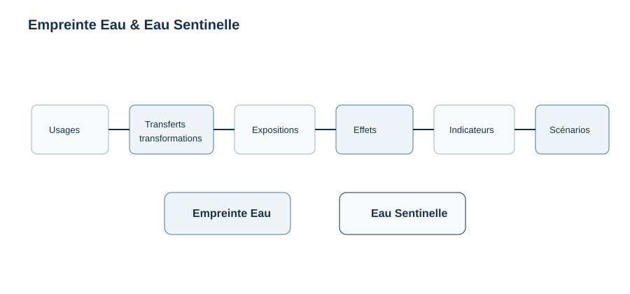

Projets
Nos recherches se développent dans des projets collectifs qui relient compréhension des processus, développement de modèles et enjeux de gestion de l’eau.
FutureFlow
Coordination scientifique : Jean-Raynald de Dreuzy & Clément Roques · Université de Neuchâtel
Avec FutureFlow, nous développons une approche multi-modèle et multi-fidélité pour mieux représenter la contribution des eaux souterraines à la dynamique des bassins versants de tête.
Nous cherchons à sélectionner le niveau de fidélité adapté aux processus dominants, aux données disponibles et aux objectifs de simulation, puis à déployer ces approches sur un grand nombre de bassins versants européens.
Participants — Arnaud Blouin, Benoît Combemale, Alexandre Boisson, Florence Habets, Oliver Schilling…
Institutions — CNRS / Université de Rennes · Université de Neuchâtel · BRGM · ENS-PSL · Universität Basel / Eawag
Financement — ANR PRCI France–Suisse

Empreinte Eau & Eau Sentinelle
Coordination scientifique : Jean-Raynald de Dreuzy & Hélène Budzinski · Université de Bordeaux
Nous cherchons à comprendre comment les socio-hydrosystèmes transforment, atténuent, retardent ou révèlent les pressions exercées sur l’eau, afin de relier usages, transferts, expositions, effets observables et indicateurs.
La phase 2 s’appuie sur quatre projets complémentaires — AMONT, HOLI-AQUA, SEREINE et SPeCtre — et sur une large communauté scientifique et partenariale.
Financement — France 2030 · PEPR OneWater – Eau Bien Commun · ANR

Eau et territoires en changement
Co-titulaires : Luc Aquilina & Jean-Raynald de Dreuzy · Université de Rennes / CNRS
Avec les gestionnaires et collectivités, nous étudions l’évolution des ressources en eau sous l’effet du changement climatique et des usages, en articulant eaux superficielles, eaux souterraines, qualité de l’eau et systèmes d’alimentation.
Partenaires fondateurs — Eau du Bassin Rennais · Rennes Métropole · SMG Eau 35
Financement — Fondation de l’Université de Rennes + partenaires

Autres projets
Nitrate recovery capacity of aquifers
Flore Sergeant · Marie Skłodowska-Curie Postdoctoral Fellowship
SHALlow groundwater resources under Climate Change
Coordination : Nicolas Massei · Université de Rouen Normandie